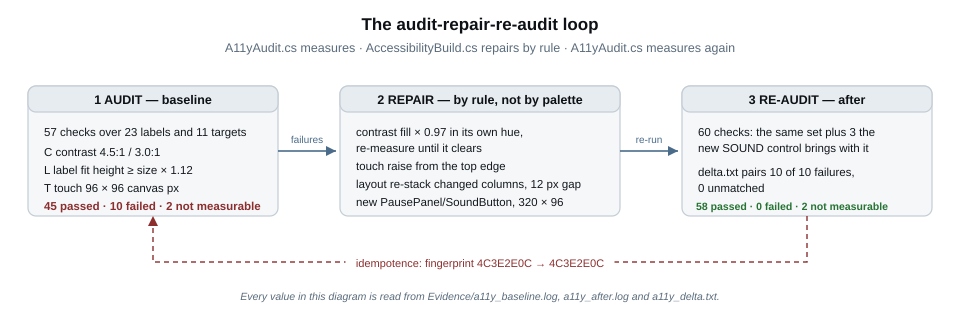

Dama is played by two people on one phone, and one of them is always a beginner. That is not a marketing description of the audience - it is a structural property of a hot-seat board game. Every match begins with a person being handed a device that is already in the middle of something, by someone who has just been using it. There is no tutorial, no account, no first-run flow: the start screen is the whole introduction.
Three properties of dama make that harder than it sounds, and each one maps onto a usability question:
| The rule | What it demands of the interface | Why a test is the only way to answer it |
|---|---|---|
| A capture must be taken | The player must understand why most of their pieces are not selectable. The interface is refusing legitimate-looking moves, and it has to look deliberate rather than broken | No amount of code review says whether that refusal reads as a rule or as a bug. Only a player can |
| A capture chains | The same piece must keep jumping while the player is still tapping, and stopping half way must be impossible | Whether the chain feels continuous or feels like a glitch is a perception question |
| The king flies | A crowned piece changes power completely: one square becomes any distance, in any direction | If the crown is not legible at a glance, the player loses the game without knowing why |
The interaction the game asks for is deliberately tiny: tap a piece, tap a destination. There is no drag, no gesture, no timing window, no double-tap. That choice was made in earlier weeks for touch reliability, and Week 14 is where it is measured rather than assumed.
The audit is a Unity editor script, Assets/Scripts/Editor/A11yAudit.cs, run from Tools > Dama > Week 14 > 1. Run Accessibility Audit. It walks every Text, Button and InputField under GameCanvas - including the panels that are switched off, which is the point, because a check that only looks at the visible start screen would never see the pause button or the profile panel.
Three check codes, three thresholds:
| Code | What it measures | Threshold | Where the threshold comes from |
|---|---|---|---|
C |
Contrast of a label against its backdrop | 4.5:1 normal text, 3.0:1 for large text (28 px or more, or 24 px bold) | WCAG 2.2 SC 1.4.3, Level AA |
L |
Label box height versus type size | rect.height >= fontSize x 1.12 |
A box shorter than the type's line height clips it. Legacy uGUI Text with verticalOverflow = Overflow spills rather than vanishes, so the check reports CLIPPED (fails) and SPILLS (warns) separately |
T |
Touch target | 96 x 96 canvas px, both dimensions, every Button and InputField |
Derived, below |
The published mobile guidance is a 48 dp minimum touch target (Android's own figure; WCAG 2.2 asks for 24 CSS px minimum, 44 enhanced). Those are physical or CSS units, not canvas units, and this project draws in canvas units - so the number has to be converted, and the conversion is written into the log header rather than assumed:
CanvasScaler : Scale With Screen Size, reference 1280 x 720, match 0.50
On a 1080p landscape phone (1920 x 1080): 1920/1280 = 1080/720 = 1.50 -> uniform scale 1.50
Android 48 dp at xxhdpi (density 3.0) : 48 x 3 = 144 physical px
144 physical px on a 1.50-scaled canvas : 144 / 1.50 = 96 canvas px
96 canvas px is therefore this project's floor. A flat 144 would have been a stricter number applied to a different unit - it would have demanded controls 50 % taller than the platform requires and forced a redesign of the whole HUD to satisfy an arithmetic mistake.
Stated in the same breath, because it matters: this is a canvas-pixel measurement against a reference resolution on an assumed phone class. It is not a ruler held against a handset. The log header says exactly that, in both runs.
HUDPanel/TurnText and HUDPanel/CountsText are drawn straight over the 3D board, so the backdrop changes as pieces move. Both runs report them as NOT MEASURABLE and neither run counts them as a pass.Image with alpha >= 0.50, over black. Black is the darkest plausible backdrop, which is the most favourable case for white text and therefore the least flattering place to be lenient.Evidence/a11y_baseline.log, 2026-11-26 03:56:56 UTC:
TOTAL: 45 passed, 10 failed, 0 warnings, 2 not measurable
Fifty-seven checks in total: 23 labels x 2 (contrast + fit) = 46, plus 11 touch targets, of which two label checks were not measurable. Ten of them failed.
| Control | Ratio | Need | Fill | Why it failed |
|---|---|---|---|---|
PausePanel/ResumeButton/Text |
4.27:1 | 4.5:1 | #268C40 |
A green chosen to look like "go". Close, but 0.23 short - the kind of miss nobody sees until it is measured |
PausePanel/RestartButtonPause/Text |
2.72:1 | 4.5:1 | #D98C1A |
An amber chosen to look like "careful". The worst ratio in the build - white on mid-amber is nearly 40 % short |
WinPanel/RestartButtonWin/Text |
2.72:1 | 4.5:1 | #D98C1A |
The same fill, reused on the end screen, failing the same way |
All five button captions are 14 px, so all three fail against the 4.5:1 normal-text bar, not the 3.0:1 large-text bar. That single fact is why the fix had to darken the fills rather than argue that the text was large.
| Control | Size | Short by | What it is |
|---|---|---|---|
StartPanel/ProfileButton |
320 x 84 | 12 px | The entry point to the Week 13 profile |
HUDPanel/PauseButton |
170 x 64 | 32 px | The only control during a match |
ProfilePanel/SideButton |
260 x 52 | 44 px | The RED / BLUE toggle |
ProfilePanel/SaveButton |
200 x 54 | 42 px | Writes the profile |
ProfilePanel/ResetButton |
200 x 54 | 42 px | Erases the profile |
ProfilePanel/BackButton |
200 x 46 | 50 px | The only way out of the panel |
ProfilePanel/NameInput |
420 x 56 | 40 px | The field the player types into |
Every one of the seven was wide enough and too short. That is a specific shape of mistake: the controls were sized while looking at a screenshot, where width is what the eye judges, and never measured in the dimension a thumb actually needs. The smallest target in the whole game was the pause button at 170 x 64 - the one control a player reaches for mid-match, one-handed.
The tempting fix for the three contrast failures is to reach into a palette and pick three darker colours. That produces a build that passes today and fails again the next time someone adds a button, because nothing about the decision changed.
So Assets/Scripts/Editor/AccessibilityBuild.cs (Tools > Dama > Week 14 > 2. Apply Accessibility Fixes) applies a rule instead:

For any label whose measured ratio is below its threshold, take the fill it already has, multiply its RGB by 0.97 in the fill's own hue, and re-measure. Repeat until the ratio clears the threshold. Never change the hue, never swap the palette, never change the text colour.
Three consequences worth naming:
#268C40 -> #24843C, and #D98C1A -> #A06713.The same script does the other two repairs:
The script hashes the layout of the whole canvas - every control's anchor, size and position - into a fingerprint, and prints it before and after the run.
[AccessibilityBuild] fingerprint 4C3E2E0C -> 4C3E2E0C (UNCHANGED - this run was a no-op)
That line is the second run. The first run changed the layout; the second changed nothing at all. A build script that keeps nudging the UI by a pixel every time it is run makes every later screenshot incomparable with the evidence already submitted, so this was checked rather than hoped for - and it is how three real bugs in the script itself were found (see PT6 section 3).
Evidence/a11y_after.log, 2026-11-26 04:06:37 UTC:
TOTAL: 58 passed, 0 failed, 0 warnings, 2 not measurable
The arithmetic, because a reader should not have to trust the headline:
| Baseline | After | |
|---|---|---|
| Labels audited | 23 | 24 |
| Label checks (contrast + fit) | 46 | 48 |
| Touch targets | 11 | 12 |
| Total checks | 57 | 60 |
| Passed | 45 | 58 |
| Failed | 10 | 0 |
| Not measurable | 2 | 2 |
Ten failures became ten passes. The passed count rises by 13, not 10, because the new PausePanel/SoundButton brings three checks of its own - contrast, label fit and touch - and all three pass. Evidence/a11y_delta.txt pairs each of the ten baseline failures with the same control in the after log, mechanically, and reports Baseline failures: 10 paired with a measured after value: 10 unmatched: 0.
The two not measurable rows are the same two controls in both logs, and are still not counted as passes.
| Control | Before | After |
|---|---|---|
PausePanel/ResumeButton/Text |
4.27:1 | 4.73:1 |
PausePanel/RestartButtonPause/Text |
2.72:1 | 4.71:1 |
WinPanel/RestartButtonWin/Text |
2.72:1 | 4.71:1 |
4.73 and 4.71 against a 4.5 requirement are passes with 0.2 of margin, not comfortable passes. The rule lands just above the line because it stops at the first step that clears it. That is the correct behaviour for a minimal fix and the wrong behaviour for a design review: a future change to either fill, or to the text size, will put these back under 4.5 with nothing to notice it. The audit is therefore not a one-off - it is the thing to re-run before every submission.
There is one genuine near-miss left in the build, and it is not one the fix touched: ProfilePanel/NameInput/Placeholder passes at 3.01:1 against a 3.0 requirement, because it is 28 px and therefore "large text". A hundredth of a ratio point is not a pass worth being pleased about. It is listed in PT6 and in the README rather than rounded up.
The audit covers a subset. This table says which parts, and - more importantly - which parts are claimed in words only.
| WCAG 2.2 criterion | Level | How this build is judged | Status |
|---|---|---|---|
| 1.4.3 Contrast (Minimum) | AA | Measured by C against the nearest opaque backdrop; 4.5:1 / 3.0:1 |
Met for all 22 measurable labels; 2 not measurable |
| 1.4.4 Resize Text | AA | Not supported. The canvas scales with the screen, but there is no user-facing text size | Not met - deferred, and named in PT6 |
| 1.4.1 Use of Colour | A | Turn and counts are stated in words (Turn: RED, Red: 12 Blue: 12) as well as in colour; a crowned piece gets a ring, not just a colour |
Met |
| 1.4.11 Non-text Contrast | AA | Not measured. Button fills against their panels were not audited as 3:1 boundaries | Not measured - stated, not claimed |
| 2.5.5 Target Size (Enhanced) | AAA | Floor of 96 canvas px on a 1.5-scaled 1080p device is 144 physical px = 48 dp, above the 44 dp enhanced bar | Met on the assumed device class |
| 2.5.8 Target Size (Minimum) | AA | 24 CSS px minimum; this build's smallest target is 170 x 96 canvas px | Met by a wide margin |
| 2.5.1 Pointer Gestures | A | No gesture, drag, pinch or multi-touch anywhere. Tap a piece, tap a destination | Met |
| 2.1.1 Keyboard | A | The game is touch-only. There is no keyboard or switch-input path, and none is claimed | Not met - stated, not claimed |
| 2.2.1 Timing Adjustable | A | The game imposes no clock. Nothing in a match is on a timer | Met |
| 3.2.4 Consistent Identification | AA | The same control means the same thing on every panel; RESUME, RESTART, SAVE, BACK and RESET keep their labels wherever they appear | Met |
| 3.3.1 Error Identification | A | A failed profile save prints the operating system's reason in ProfilePanel/StatusText rather than failing silently (Week 13, L14) |
Met |
| 4.1.3 Status Messages | AA | The status line reports saves and resets, and the SOUND control states its own state in words. Unity's uGUI exposes nothing to a screen reader | Partial - worded on screen, not announced |
Three sentences about the gaps, because a table of green ticks would be a worse document:
Text and Button have no accessibility tree; a voice-over user cannot use this game. Fixing it means a native accessibility bridge (Android AccessibilityNodeProvider), which is a week of work on its own and is not in this submission.The build had no audio at all before this week: t:AudioClip returned zero results, there was no AudioSource in the scene, and nothing called Handheld.Vibrate. Every event in a game of dama was silent - including the two that matter most.
Assets/Scripts/Core/GameFeedback.cs adds five clips and one haptic:
| Event | Clip | Why it is not decoration |
|---|---|---|
| A move | Dama_Move |
Confirms the tap registered. A player who is unsure whether their tap landed will tap again, and a second tap in a chain game is a real mistake |
| A capture | Dama_Capture + Handheld.Vibrate() |
The single most important event in the game - the opponent's piece has been removed whether they wanted it or not. It gets sound and touch because the phone may be on silent |
| A crown | Dama_Crown |
The moment a piece changes power completely. A silent promotion is the worst usability failure available in this game |
| A win | Dama_Win |
Distinguishes the end screen before it is read |
| A loss | Dama_Lose |
Same, and deliberately different from the win sound. A player who hears the win clip know the result without looking |
Design rules the component follows:
GameFeedback never changes a piece, a turn or a score. The rules in DamaBoard call it. A sound that could change the game would be a second source of truth.PausePanel/SoundButton reads SOUND: ON or SOUND: OFF, at 22 px bold and 9.29:1 - the most legible control added this week. An icon would need a second icon to explain itself.Time.timeScale = 0. The game pauses and ends by freezing time; anything keyed to deltaTime would go quiet exactly when the player needs the end-of-match cue.PlayerPrefs["audio.feedback"], so a player who turns sound off in a lecture hall is not asked again on the next launch. This is the only thing the project stores in PlayerPrefs besides the Week 13 signature salt, and it holds no personal data.What is not claimed: the haptic. Handheld.Vibrate() is a no-op in the Editor, and every capture this week was taken in the Editor, so the transcript itself says "A buzz therefore cannot be claimed from this file, only from a build on a handset." The call is in the build; the buzz is unproven.
A usability test answers questions an audit cannot. The audit can say a button is 96 px tall; it cannot say whether a person found it.
| # | Task | What it probes | Why it is in the set |
|---|---|---|---|
| T1 | Put your name on the player profile and save it | Discoverability of PROFILE from the start screen; whether a name field with a limit is understandable | The Week 13 feature a player must find before it can matter |
| T2 | Start a match | Whether the primary action is unambiguous; whether the HUD says whose turn it is | The first thing anyone does |
| T3 | Catch one of the other side's pieces | Whether the forced-capture rule is discovered unaided | The rule that makes the game dama. If the game cannot teach it, the theme is decoration |
| T4 | Crown one of your men into a Dama | Whether promotion is understood, and whether the change is visible | The second rule that defines the game |
| T5 | Finish the match | Whether the two end conditions and the end screen are legible | The screen a player sees last, and the one that decides whether they play again |
Both rules and profile, deliberately. A test of only the board would have left the Week 13 panel unmeasured in the week it matters; a test of only the profile would have measured a menu. The five tasks are ordered so that the board is reached through the profile, which is the real path a player takes.
Recorded per task: result (DONE / DONE WITH HELP / GAVE UP), time to the nearest second, help given, wrong taps, verbatim quotes and a severity from a four-level scale shared with the machine pre-test.
No average is computed. Five participants is not a sample; a mean success rate over five people would look like a measurement without being one. What is reported is the per-task row and the quote, because "three of five found RESET without being told" is a claim someone can check, and "78 % usability" is not.
The full kit - consent, script, task cards, observation sheet, facilitator checklist - is in ../Playtest/, and it is reusable: Week 15's defect re-test can run the same five tasks on the repaired build and compare row by row.
Deferred on purpose, each with the reason it is deferred rather than forgotten:
| Deferred | Why it is not done this week | Where it goes |
|---|---|---|
| Type-size scaling (WCAG 1.4.4) | The five 14 px button captions are the smallest strings in the game, on the largest controls. Fixing them means re-authoring five prefab labels and re-taking every capture and every audit baseline - which would have invalidated the evidence this document is built on | Week 15, as defect M1, with a fresh baseline |
| Non-text contrast (SC 1.4.11) | Needs a fourth check in the audit: fill against panel, not label against fill | Week 15, a check, not a paragraph |
| A route back to the start screen | The pause panel offers RESUME, RESTART and SOUND; there is no way back to PROFILE mid-match. Adding a fourth button is a layout change, and this week's layout was already frozen when the finding arrived | Week 15, defect M2 - the only S2 found |
| Screen-reader support | No accessibility tree in uGUI; requires a native Android bridge | Not in scope for this module; stated as a gap in section 6 |
| A physical handset run | No APK attached; every capture is the Editor at 1151 x 584 | Week 16's profiling pass needs a device anyway, so the first device run lands there |
| Week | What this week's work becomes the input for |
|---|---|
| 14 | The audit, the repair rule, the feedback layer and the playtest kit - this submission |
| 15 | The four machine findings M1-M4 become the defect log's first entries, each with a severity; the five tasks are re-run on the repaired build so the defect log has a before and an after |
| 16 | The same 96 px floor is a performance question too: the SOUND button and the enlarged controls are extra draw work on the pause panel, and the audio layer is five AudioSource plays that must not allocate |
| 17 | The user guide describes the controls this week fixed, and the accessibility statement in the README is written from section 6 of this document rather than from scratch |
| 18 | The demo script includes the two-press reset, the SOUND toggle and one deliberate forced capture, because those are the three things this week is about |
| File | What it shows |
|---|---|
Evidence/a11y_baseline.log |
57 checks before the fixes: 45 passed, 10 failed, 2 not measurable - with the 96 px derivation in the header |
Evidence/a11y_after.log |
60 checks after: 58 passed, 0 failed, 2 not measurable, same thresholds, same control set plus the SOUND button |
Evidence/a11y_delta.txt |
Every baseline failure paired with its measured after value, generated mechanically; 10 of 10 paired, 0 unmatched |
Evidence/a11y_audit_20261126_115656.log, ..._120637.log |
The timestamped copies of the two runs |
Evidence/E1_pause_sound.png |
The pause panel with SOUND: ON, no control overlapping its neighbour |
Evidence/E2_hud_in_match.png |
The in-match HUD over the board: turn and counts |
Evidence/E3_profile_panel.png |
The profile panel with every raised control inside the canvas |
Evidence/feedback_lines.txt |
The [Feedback] transcript of a scripted match: 5 of 5 event kinds fired |
Evidence/autopilot_session.md |
The machine pre-test, its four findings and its disclosed harness alert |
Playtest/01 - 05 |
The consent form, session script, task cards, observation sheet and facilitator checklist |
others/SA6_audit_loop.svg |
The audit-repair-re-audit loop in section 4 |